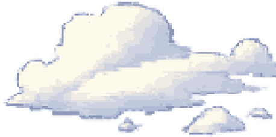
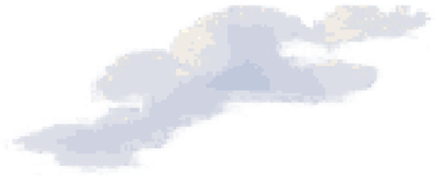
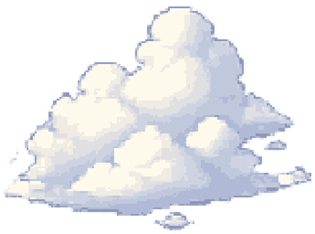
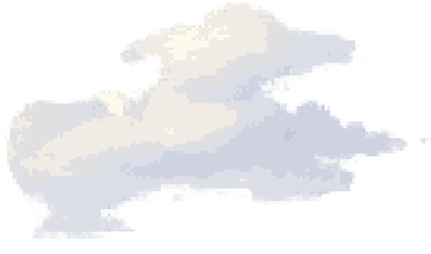
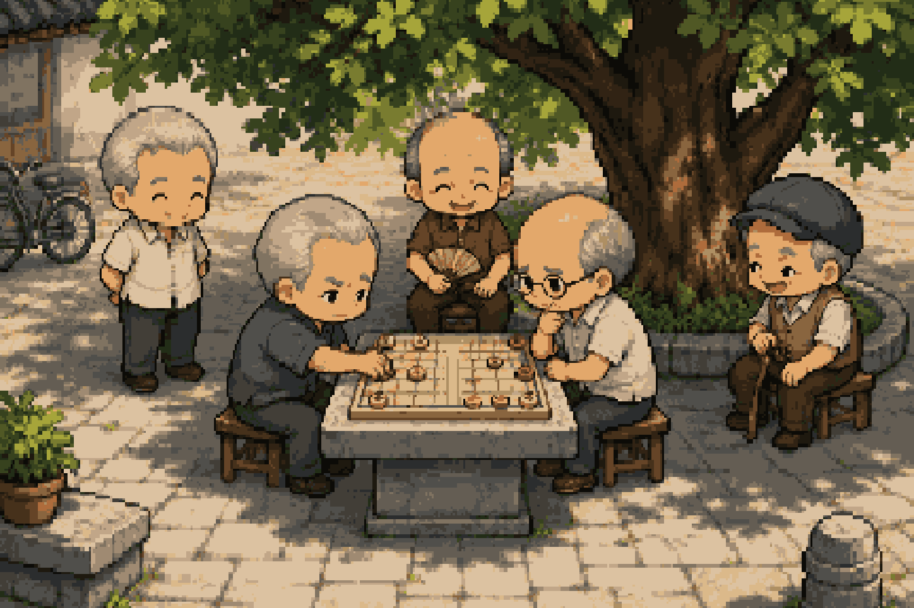

A JOURNEY BEGINS
再见宏景
HONG JING · AGAIN
TRAVELER'S REGISTER
创建新旅人
18岁
背包旅人





宏景小公园树荫棋局
A区 · 序章宏景火车站
☀晴 · 清晨08:20
HONG JING COLLECTION
收藏册
把重逢途中遇到的人与事，慢慢留在这里。
NEW COLLECTION
CHAPTER TEST
从哪里开始测试？
测试过程不会覆盖正式存档。可以随时从右上角菜单再次切换地点。
旅人18 岁 · 宏景火车站○ 回到宏景☆ 星形便签
按方向键或 WASD，在站台上走一走
← 探索整座站台 →